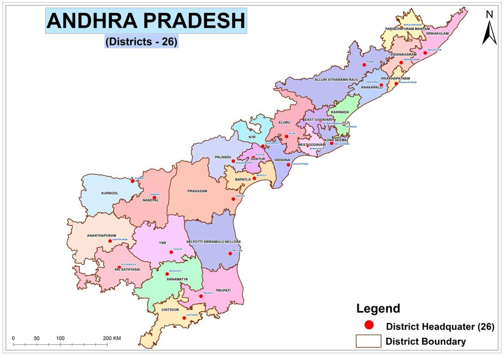

| Name: | Andhra Pradesh |
|---|---|
| Capital: | Amaravati |
| Language: | Telugu |
| Chief Minister: | Y. S. Jagan Mohan Reddy |
| Total Districts: | 26 |
| Population: | ~49 million (as per 2011 census) |
| Formation: | 1 October 1953 (as Andhra State), 1 November 1956 (as Andhra Pradesh) |
| Area: | 162,970 km² (7th largest in India) |
| Borders: | Telangana, Chhattisgarh, Odisha, Tamil Nadu, Karnataka, Bay of Bengal |
| Coastline: | ~972 km along the Bay of Bengal (2nd longest in India) |
Know more